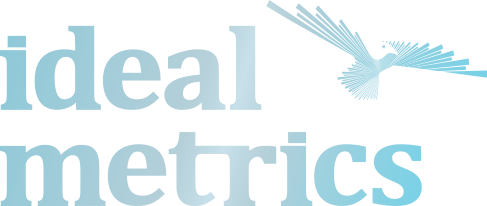

Diagnóstico
01
Análise da situação atual e identificação de gaps em relação às normas.

 Ideal Metrics
Ideal Metrics
Integração e
Sustentabilidade,
do diagnóstico ao certificado.
Com atuação desde 1998, apoiamos empresas na conquista de certificações, na conformidade com padrões internacionais e na inspeção da qualidade. Não emitimos o certificado, e é justamente isso que assegura a isenção do nosso trabalho.
Serviços / [ IM.1 ]
Mais de 25 anos preparando organizações de diversos setores para as normas ISO 9001, 14001, 45001 e padrões de mercado.
[Saiba mais]Inventário, neutralização e registro de emissões de gases de efeito estufa segundo o GHG Protocol.
[Saiba mais]Consultoria para organizações que buscam atender aos padrões éticos SEDEX SMETA nas auditorias de 2 e 4 pilares.
[Saiba mais]Estruturação de práticas ambientais, sociais e de governança alinhadas aos padrões internacionais.
[Saiba mais]Verificação de produto pós-produção e antes do embarque: funcionamento, estado, embalagem, quantidade e requisitos.
[Saiba mais]Manutenção do sistema de gestão, auditorias internas e preparação para as recertificações periódicas.
[Saiba mais]Do diagnóstico à certificação, conduzimos cada etapa com o consultor dentro do seu processo.
Análise da situação atual e identificação de gaps em relação às normas.
Plano de implantação com responsáveis, prazos e entregas por visita.
Construção do sistema de gestão integrado à rotina da operação.
Verificação da conformidade e preparação para a auditoria de certificação.
Acompanhamento da auditoria do organismo certificador até o certificado emitido.

Preparamos sua organização para a auditoria do organismo certificador. Como não certificamos, não existe o conflito de quem consulta e certifica o mesmo cliente.

Equipe de inspetores na Ásia, Europa e Oriente Médio. Verificamos produção e fornecedores na fonte, antes do embarque.

Desde 1998, cada projeto é conduzido de perto, com o consultor dentro do seu processo.